First, middle and last frame of each shot, overlay on. 15 shots, 45 stills, 480x270 internal, saved at 4x, shown here at 1x. Running time 112 s at 24 fps.
01The lamp0:00.000 to 0:07.000, 7.0 s50 mm
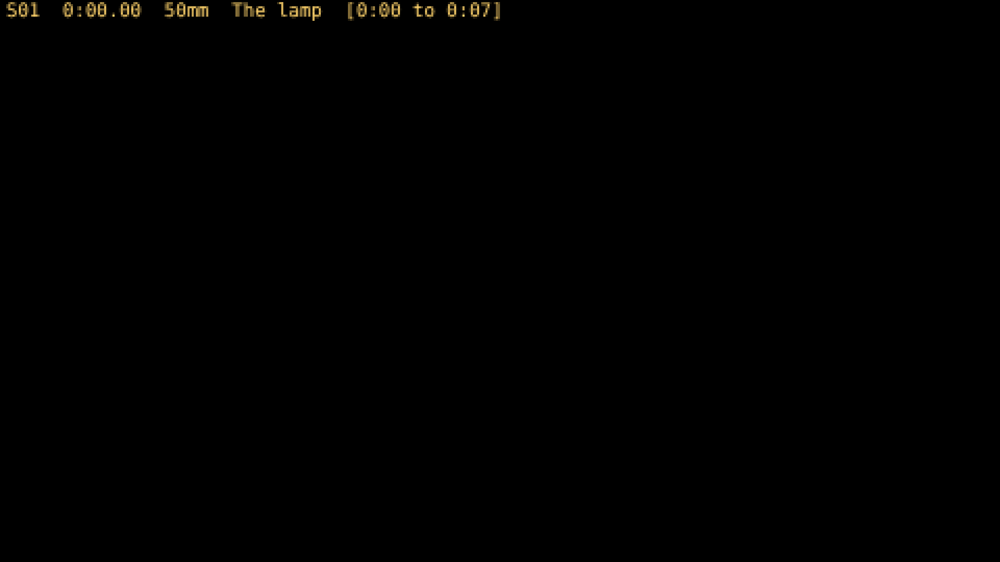
first 0:00.000 (0.000 s, frame 0)
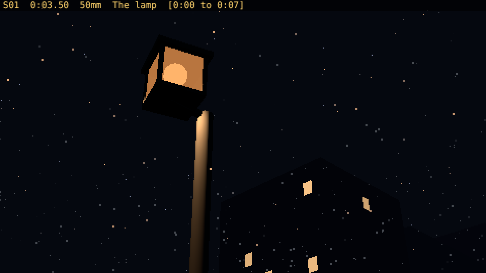
mid 0:03.500 (3.500 s, frame 84)
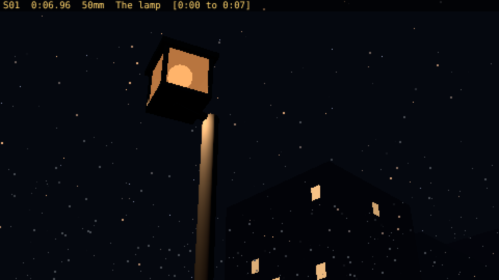
last 0:06.958 (6.958 s, frame 167)
02The empty street0:07.000 to 0:14.000, 7.0 s24 mm
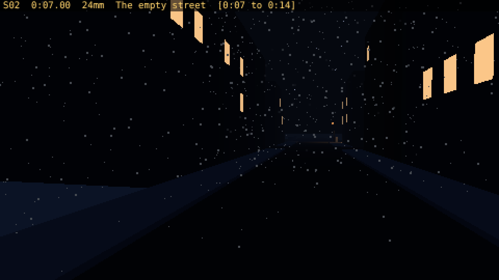
first 0:07.000 (7.000 s, frame 168)
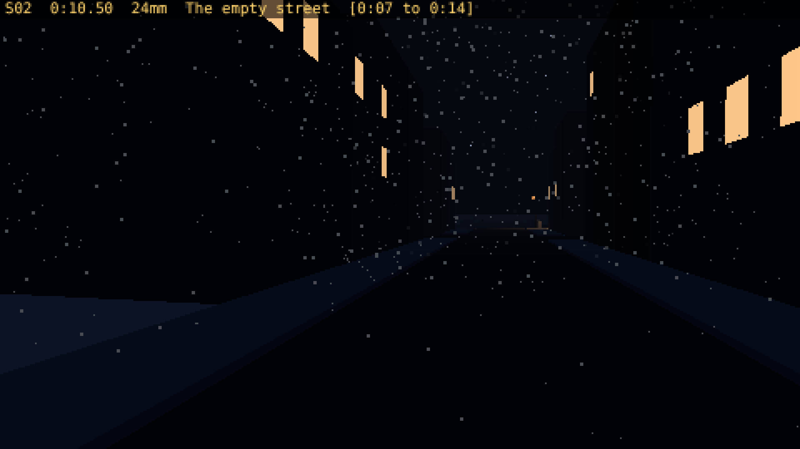
mid 0:10.500 (10.500 s, frame 252)
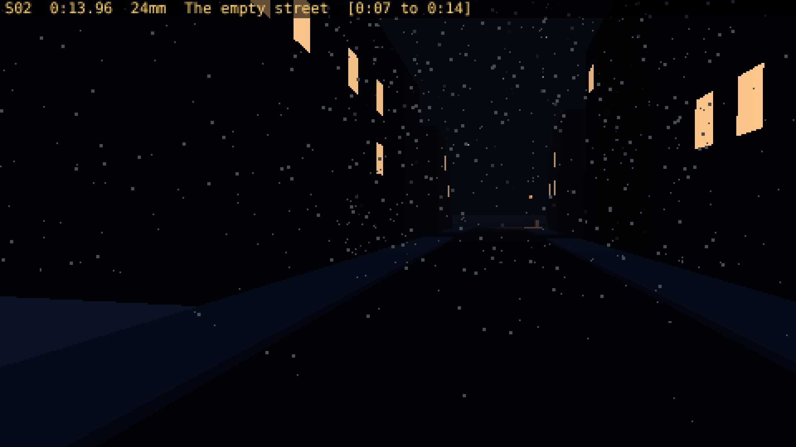
last 0:13.958 (13.958 s, frame 335)
03Light before the car0:14.000 to 0:22.000, 8.0 s35 mm
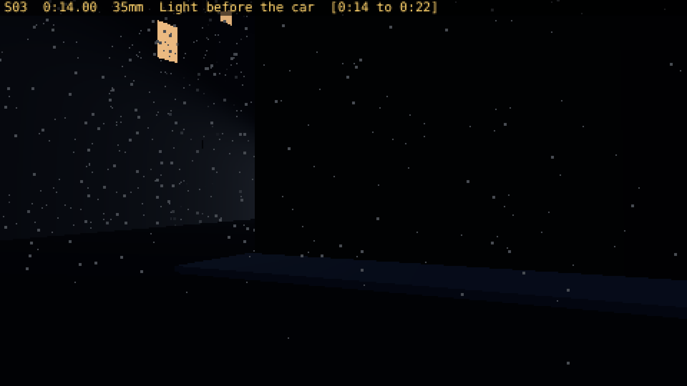
first 0:14.000 (14.000 s, frame 336)
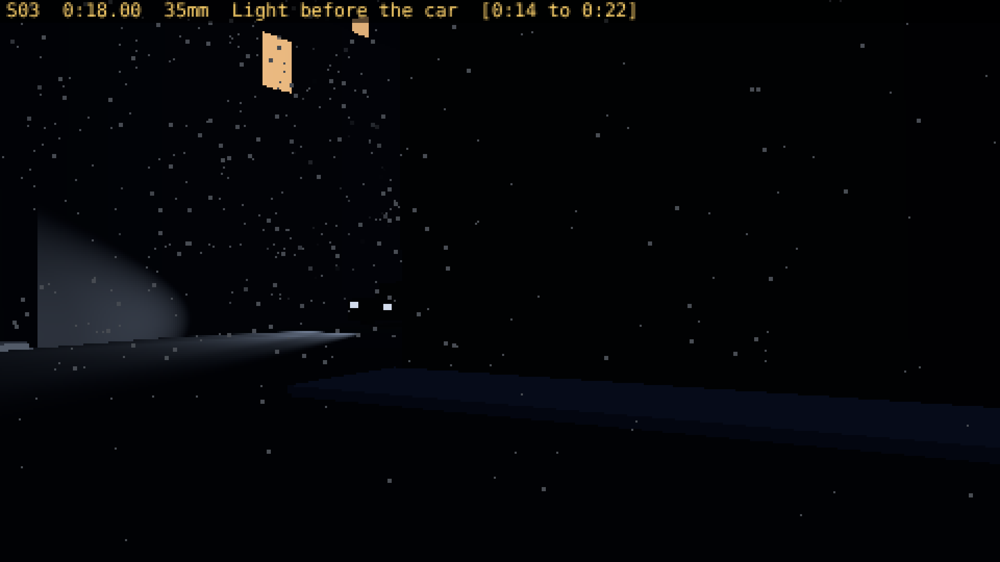
mid 0:18.000 (18.000 s, frame 432)
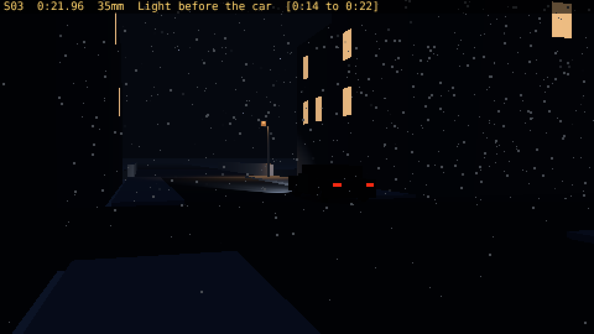
last 0:21.958 (21.958 s, frame 527)
04The car arrives0:22.000 to 0:29.000, 7.0 s24 mm
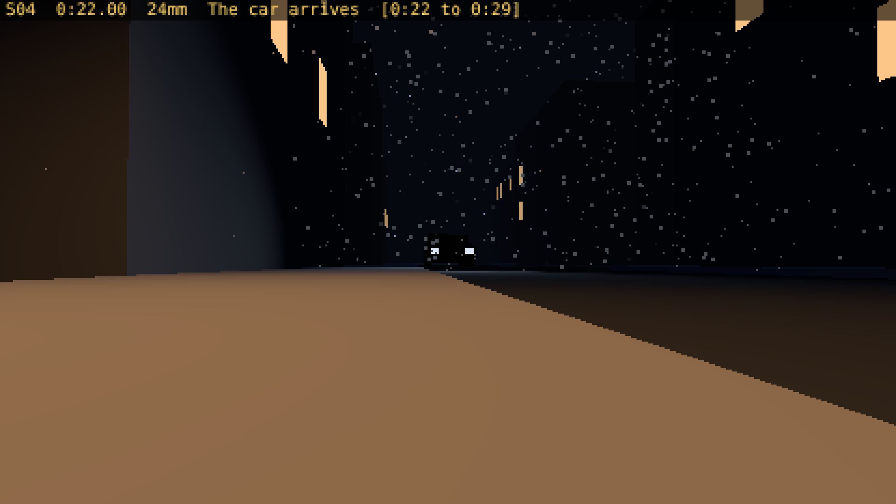
first 0:22.000 (22.000 s, frame 528)
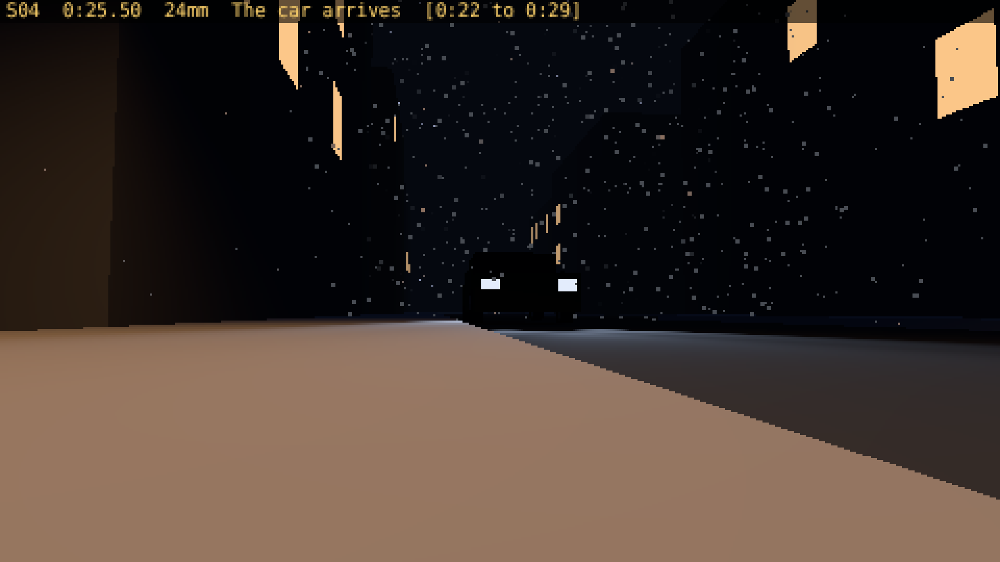
mid 0:25.500 (25.500 s, frame 612)
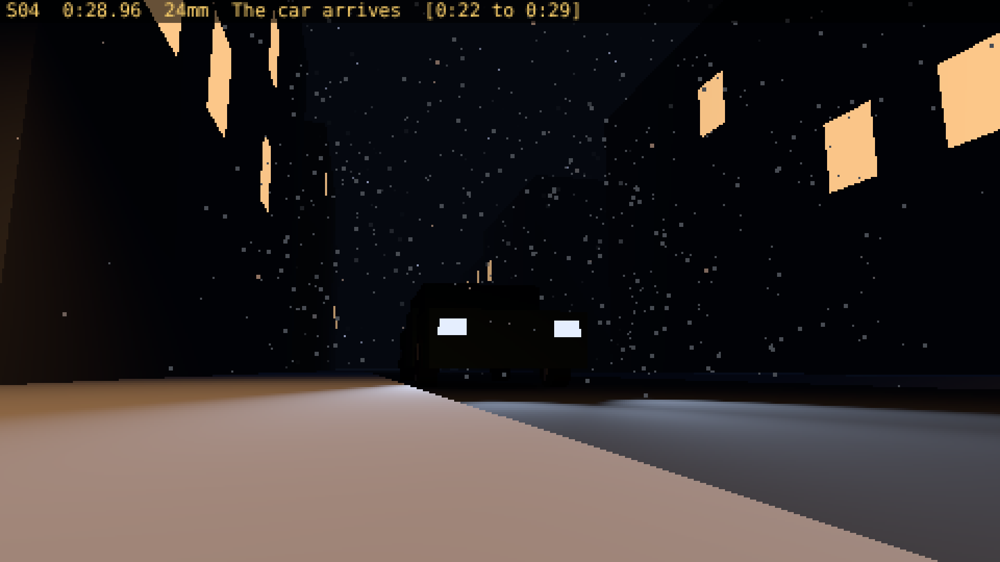
last 0:28.958 (28.958 s, frame 695)
05Feet in the snow0:29.000 to 0:40.000, 11.0 s35 mm